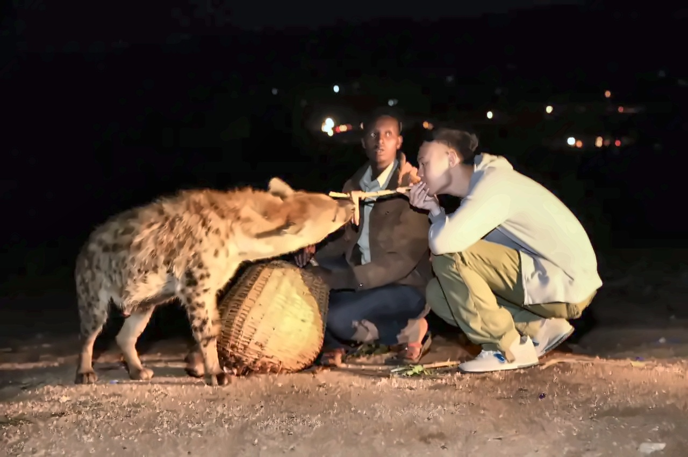
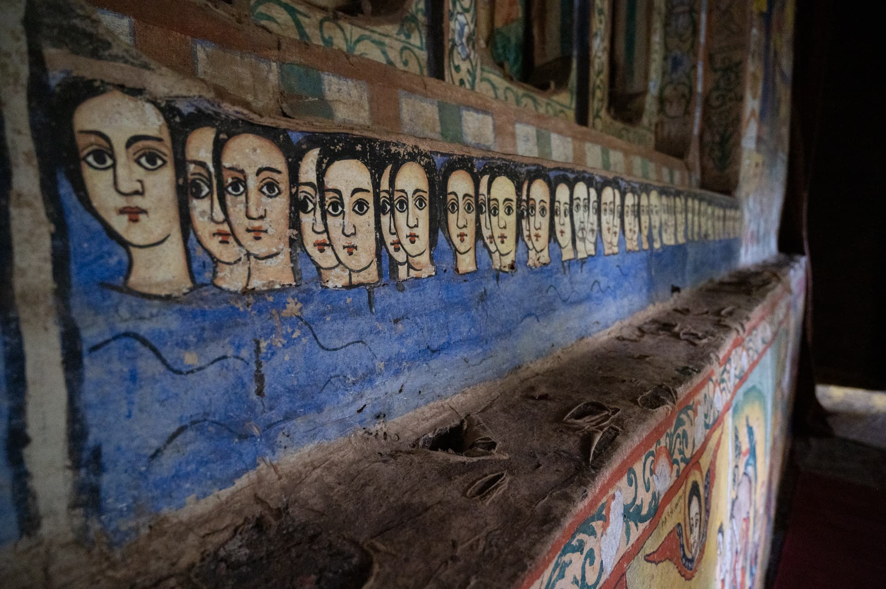
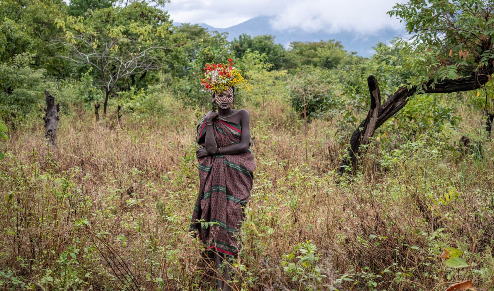
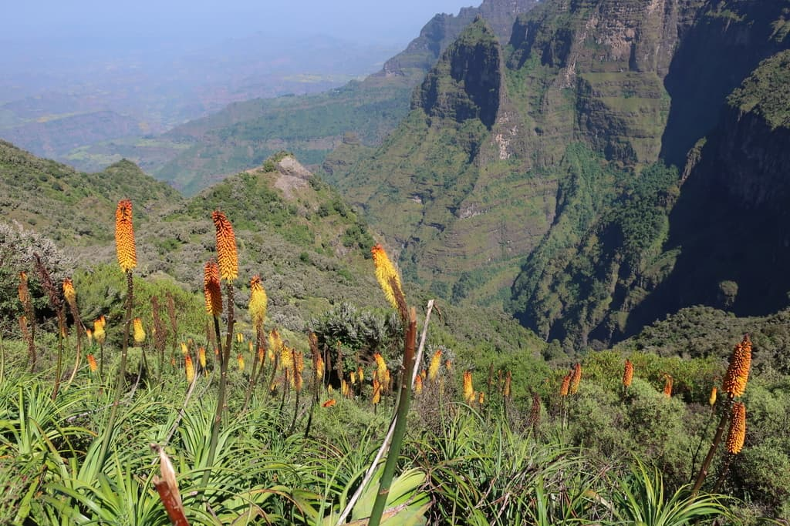
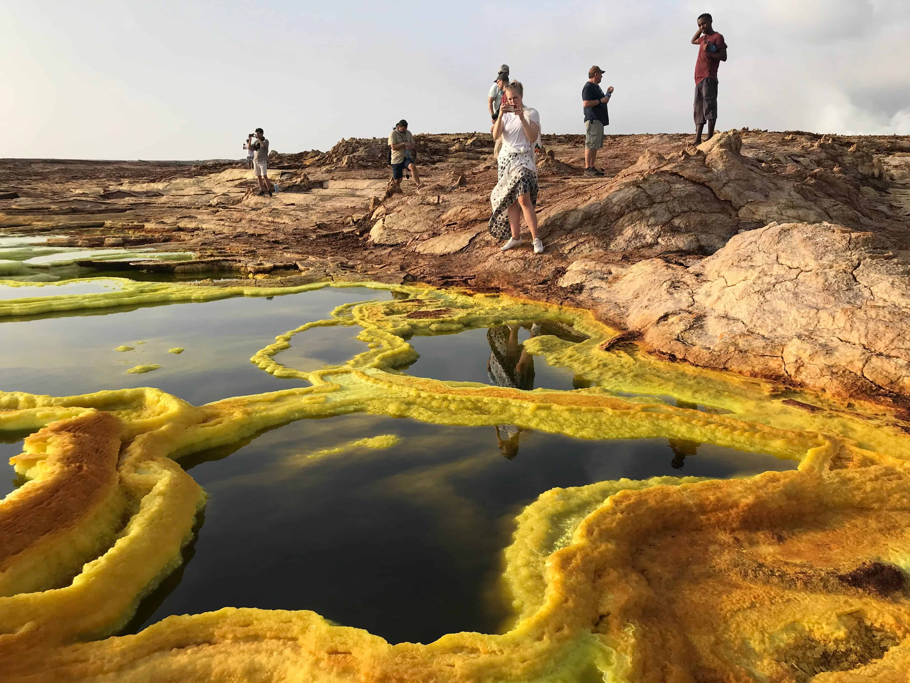
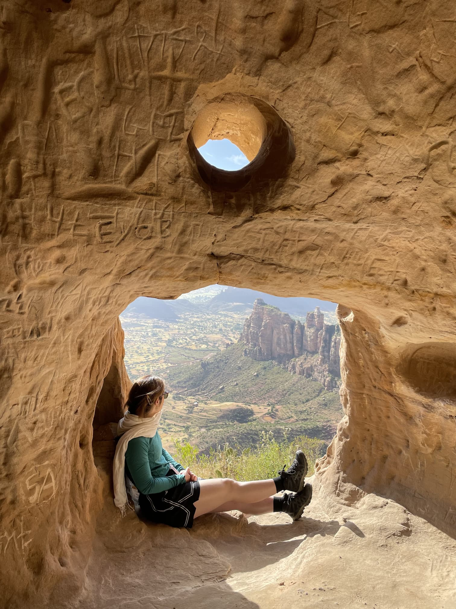
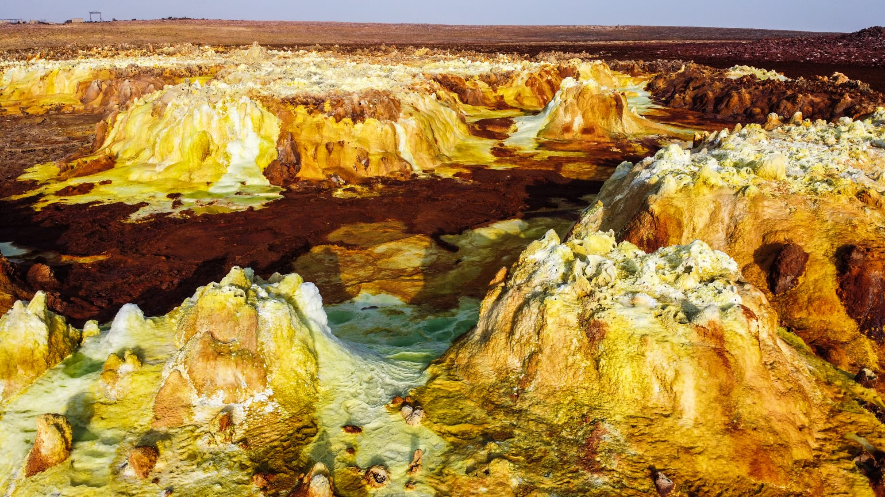
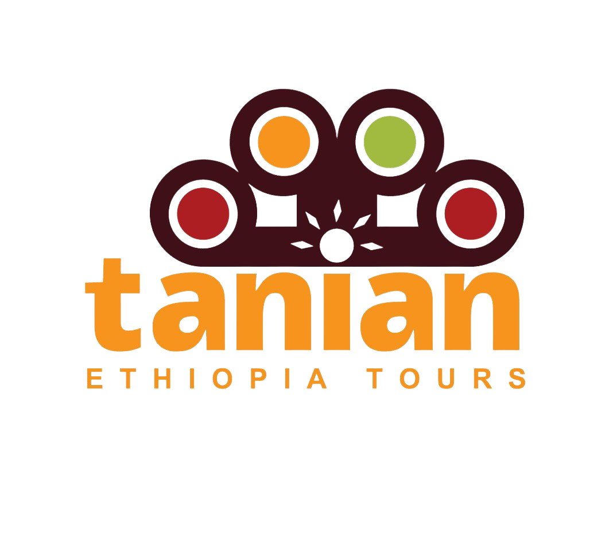

ハラール&バレ山脈
ハラールは、中世の面影を残す城壁都市です。旧市街のジュゴルは、2006年にユネスコの世界遺産に登録されました。街を囲む城壁は、高さ約5メートル、全長約3.5キロです。82の








ハラールは、中世の面影を残す城壁都市です。旧市街のジュゴルは、2006年にユネスコの世界遺産に登録されました。街を囲む城壁は、高さ約5メートル、全長約3.5キロです。82の
.webp)
エチオピア南西部に、数多くの民族が暮らす地域があります。オモ・バレーです。独自の装い、儀式、暮らしが今も受け継がれていて、エチオピアのなかでも特別な場所の一つです。
エチオピア北部のティグライ州には、2種類の遺産があります。古代の王国が残した巨大な石碑と、断崖や洞窟に刻まれた アクスム：古代王国の都 アクスムは、紀元前後から、ローマ帝国とペルシャのあいだで最も強い国の一つだった、アクスム王国の中心です。
スポットの内容記載
エチオピアには、高山の草原、火山、温泉、そして、ここにしかいない動物がいる国立公園があります。 シミエン山地国立公園：アフリカの屋根 世界遺産に登録されている公園で、雄大な自然と野生動物で知られています。最高峰は、標高4,543メートルのラス・ダシェンです。エチオピアオオカミ、ワリア・アイベックス、ゲラダヒヒに会えることでも有名です。
旅行日数・人数・シーズンにより変動します。下記は旅行会社（tanian ethiopia tours）が提供するプランの目安価格です。
本サイトは旅行の企画・募集・手配を行うものではなく、情報提供のみを目的としています。正式な内容確認・お申し込みは提携旅行会社へ直接お問い合わせください。
150,000 円〜 / 1名
250,000 円〜 / 1名
400,000 円〜 / 1名
以下は旅行会社（tanian ethiopia tours）が提供するクーポンです。本サイトでは割引の発行・予約手続きは行っておりません。ご利用の際は予約時に旅行会社へ直接コードをお伝えください。
出発の60日前までのご予約が対象の割引記載
有効期限：記載
4名様以上でのご予約が対象の割引記載
有効期限：記載
2回目以降のご予約が対象の割引記載
有効期限：記載

今回の旅行で利用
今回のエチオピア旅行の手配をお願いした旅行会社記載です。現地ガイドの手配や安全管理など、旅行会社の特徴・魅力をここに記載します。
公式サイトを見る